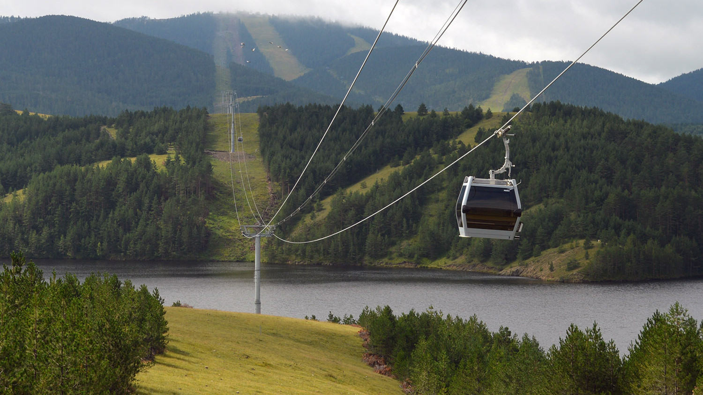
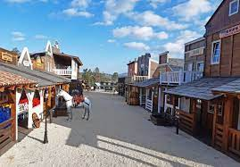
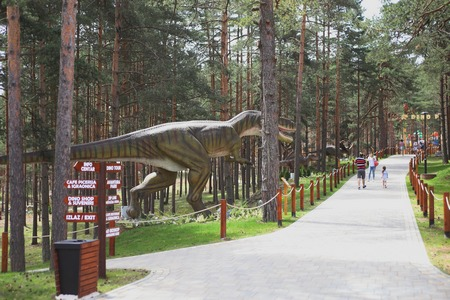
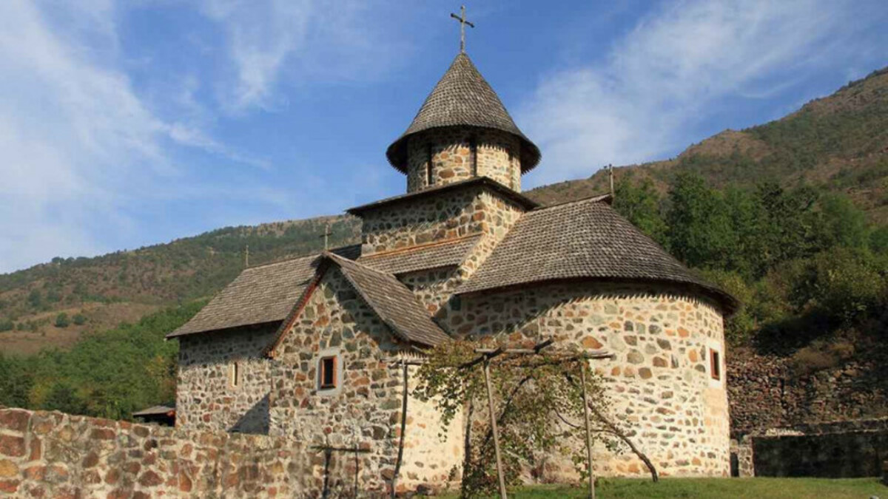
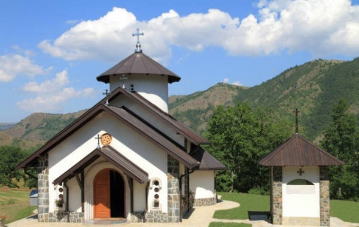
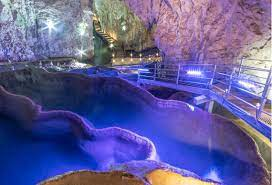
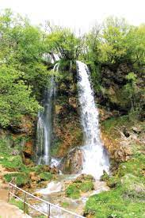

 Gold Gondola je ponos celog Zlatibora – za veoma kratko vreme postala je ne samo najveća atrakcija, već i pravi turistički zamajac čitavog regiona. Sa svojom trasom dugom skoro 9 kilometara, najduža je jednosegmentna panoramska gondola na svetu. Kapaciteta 800 putnika/h u 72 kabine sa po 10 mesta, i sa mogućnošću maksimalnog kapaciteta od 90 kabina i 1000 putnika/h, kreće se maksimalnom brzinom od 6 m/s. Vožnja od početne stanice u centru Zlatibora do krajnje stanice na najvišem vrhu Torniku, traje oko 30 minuta i pri tom se prelazi visinska razlika od 531m. Ovo panoramsko uživanje ne bi bilo potpuno bez pauze na međustanici, koja se nalazi na otprilike pola puta do Tornika, a prelepo Ribničko jezero, koje se u svoj svojoj raskoši izvija jednim delom trase, prosto mami svakoga da bar na trenutak zastane i uživa u prelepom pogledu.
 Tematski park El Paso City (prelaz) dobio je naziv po istoimenom pograničnom gradu u Sjedinjenim Američkim Državama. Kao što reka Rio Grande, čini prirodnu granicu između SAD i Meksika, tako i reka koja protiče kompleksom El Paso City-ja na Zlatiboru, deli dve tematske celine na američki i srpski deo. Istovremeno ovo je i mesto susreta dve kulture. Sa jedne strane reke nalazi se kaubojski grad i indijansko selo, dok je na drugoj obali smešten srpski deo sa crkvom i simpatičnim zlatiborskim zaselkom. Prolaskom kroz El Paso City doživećete dva različita podneblja u istom vremenskom periodu od 1865. do 1890. godine, ali na različitim krajevima sveta.
 Tematski park El Paso City (prelaz) dobio je naziv po istoimenom pograničnom gradu u Sjedinjenim Američkim Državama. Kao što reka Rio Grande, čini prirodnu granicu između SAD i Meksika, tako i reka koja protiče kompleksom El Paso City-ja na Zlatiboru, deli dve tematske celine na američki i srpski deo. Istovremeno ovo je i mesto susreta dve kulture. Sa jedne strane reke nalazi se kaubojski grad i indijansko selo, dok je na drugoj obali smešten srpski deo sa crkvom i simpatičnim zlatiborskim zaselkom. Prolaskom kroz El Paso City doživećete dva različita podneblja u istom vremenskom periodu od 1865. do 1890. godine, ali na različitim krajevima sveta.
 Manastir Uvac je izgrađen u 13. veku kao svojevrsna brana bogumilskoj jeresi i nadirućem islamu. Ovaj srednjovekovni manastir je zadužbina Nemanjića, a podatak iz jedne crkvene knjige iz 1622. godine svedoči da je ovo zdanje posvećeno rođenju Presvete Bogordice. Nekada davno manastir Uvac je bio od suštinskog značaja za opstanak pravoslavnog stanovništva u ovoj živopisnoj dolini. Porušen je u prvim decenijama 18. veka kada su paljene i rušene bogomolje u Starom Vlahu i Srbiji.
 Manastir Dubrava (Žička eparhija) smešten je ostrvskoj visoravni u selu Dobroselici, na jednom od najlepših meandara reke Uvac. Na samo 17 km udaljenosti od ski – centra Tornik, predstavlja još jedan neukroćeni kutak prirode Zlatibora. Okružen grandioznom borovom šumom i brdovitim predelom, predstavlja svojevrsnu oazu spokoja i tišine koja odoleva vremenu i čuva svoju drevne tajne. Ovo skrovito mesto, odsečeno od civilizacije, simbolizuje preplitanje sprske istorije, mitskih predanja i duhovnosti.
 Lokacija Stopića pećine je na planini Zlatibor, između dva sela Rožanstva i Trnave. Put Zlatibor – Sirogojno svoju deonicu ima tačno iznad pećine. Od Užica je potrebno samo 19 km da dođete do ove sjajne podzemne prostorije koja oduzima dah. Stopić je zaseok na kom se nalazi pećina samim tim je nazvana po njemu. Ovo je rečna pećina kroz koju protiče čist Trnavski potok. Nastanak pećine vezuje se produbljenjem pod uticajem vode koji traje i danas. Stopića pećina je druga u Srbiji po veličini grandioznog ulaza koji je 18 m visok i 35 m širok. Njena dužina je 1691.5 metara a zapremina oko 120.000 m³
 U selu Gostilje, 25km od centra Zlatibora nalazi se pravi hidrološki dragulj - Gostiljski vodopad. Na ušću Gostiljske reke u reku Katušnicu voda se obrušava sa 20 m visine stvarajući vodopad. Prizor dodatno ulepšava netaknuta priroda oko vodopada koju čine bogate borove i bukove šume, spokoj i svežina. Voda je prilično hladna i ukoliko se približete vodopadu sigurno ćete osetiti efekat hladnog tuša što je posebno prijatno leti. Nizvodno niz reku postoji mnoštvo malih brzaka, slapova, virova i vodopada pružajući pravi užitak za šetanju uz zvuk vode koja teče nadomak vas.